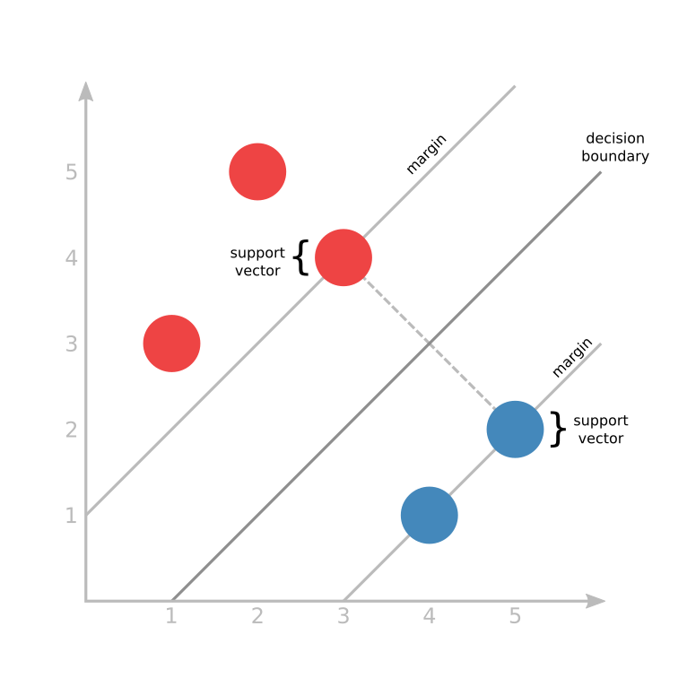

Logistic Regression vs Support Vector Machine
Classification of Female Labor Participation Using Different Linear Discriminants
Support Vector Machine

Support Vector Machine
- Margin-maximizing boundary gives maximum leeway for classifying points close to boundary
- Penalty for misclassified point is proportional to distance from boundary
- Tradeoff between fat margin and low total error penalty
Data Description
> head(femlab)
X k5 k618 age wc hc lwg inc lfp
1 1 1 0 32 no no 1.2101647 10.910 yes
2 2 0 2 30 no no 0.3285041 19.500 yes
3 3 1 3 35 no no 1.5141279 12.040 yes
4 4 0 3 34 no no 0.0921151 6.800 yes
5 5 1 2 31 yes no 1.5242802 20.100 yes
6 6 0 0 54 no no 1.5564855 9.859 yes
Logit Model 1
> femLogitMod1 <- glm(lfp ~ age + lwg + inc, data = femTrain, family = "binomial")
> femProb1 <- predict(femLogitMod1, femTest, type = "response")
> femLogitPred1 <- factor(femProb1 > .5, levels=c(FALSE, TRUE), labels = c("no","yes"))
> femLogitPerformance1 <- table(femTest$lfp, femLogitPred1, dnn = c("actual", "predicted"))
> femLogitPerformance1
predicted
actual no yes
no 31 72
yes 27 96
>
Logit Model 2
> femLogitMod2 <- glm(lfp ~ age + lwg + inc + k5fac, data = femTrain, family = "binomial")
> femProb2<- predict(femLogitMod2, femTest, decision.values = TRUE, type = "response")
> femLogitPred2<- factor(femProb2 > .5, levels=c(FALSE, TRUE), labels = c("no","yes"))
> femLogitPerformance2 <- table(femTest$lfp, femLogitPred2, dnn = c("actual", "predicted"))
> femLogitPerformance2
predicted
actual no yes
no 46 57
yes 25 98
>
SVM Model 1 - Tuning
> femSVMTune1 <- tune(svm, lfp ~ age + lwg + inc, data = femTrain,
+ ranges = list(gamma = 2^(-8:1), cost = 2^(0:5)),
+ tunecontrol = tune.control(sampling = "fix"))
> femSVMTune1
Parameter tuning of ‘svm’:
- sampling method: fixed training/validation set
- best parameters:
gamma cost
0.125 4
- best performance: 0.3409091
>
Tuning Parameters
- C: cost of classification, controling the influence of each supporting vector.
- Gamma: define how far the influence of a single training example reaches.
- Straight up from Quora
SVM Model 1
> femSVMMod1 <- svm(lfp ~ age + lwg + inc, data = femTrain, cost = 4, gamma = 0.5)
> summary(femSVMMod1)
Call:
svm(formula = lfp ~ age + lwg + inc, data = femTrain, cost = 4,
gamma = 0.5)
Parameters:
SVM-Type: C-classification
SVM-Kernel: radial
cost: 4
gamma: 0.5
Number of Support Vectors: 345
( 177 168 )
Number of Classes: 2
Levels:
no yes
> femSVMPred1 <- predict(femSVMMod1, femTest, decision.values = TRUE, type = "response")
> femSVMPerformance1 <- table(femTest$lfp, femSVMPred1, dnn = c("actual", "predicted"))
> femSVMPerformance1
predicted
actual no yes
no 69 34
yes 33 90
>
SVM Model 2 - Tuning
> femSVMTune2 <- tune(svm, lfp ~ age + lwg + inc + k5fac, data = femTrain,
+ ranges = list(gamma = 2^(-8:1), cost = 2^(0:5)),
+ tunecontrol = tune.control(sampling = "fix"))
> femSVMTune2 <- tune(svm, lfp ~ age + lwg + inc + k5fac, data = femTrain,
+ ranges = list(gamma = 2^(-8:1), cost = 2^(0:5)),
+ tunecontrol = tune.control(sampling = "fix"))
> femSVMTune2
Parameter tuning of ‘svm’:
- sampling method: fixed training/validation set
- best parameters:
gamma cost
0.125 32
- best performance: 0.2159091
SVM Model 2
> femSVMMod2 <- svm(lfp ~ age + lwg + inc + k5fac, data = femTrain, cost = 32, gamma = 0.02)
> femSVMPred2 <- predict(femSVMMod2, femTest, decision.values = TRUE, type = "response")
> femSVMPerformance2 <- table(femTest$lfp, femSVMPred2, dnn = c("actual", "predicted"))
> femSVMPerformance2
predicted
actual no yes
no 75 28
yes 35 88
>